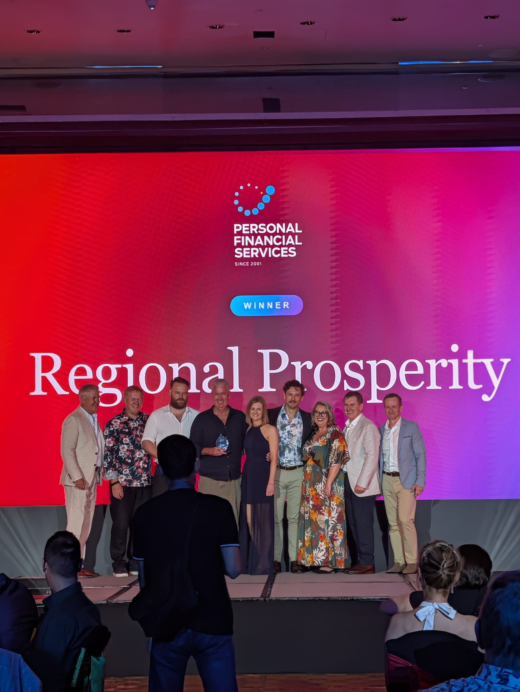

01 / THE CHALLENGE
Good advice starts with people.
Preparing it starts with information.
For Regional Prosperity Financial Advice, the purpose of technology comes back to the people it serves. The firm helps regional people, families and communities, with approximately 20 full-time team members across Colac, Hamilton, Geelong, Warrnambool and Queenscliff.
In 2026, Personal Financial Services named Regional Prosperity the Australian Large Advice Practice of the Year at the PFS Awards. That recognition provides context for the firm and its work; this case study explores its separate experience of adopting Bunya. Read PFS’s award announcement ↗

Behind the client conversations was a familiar administrative challenge. Documents were organised by adviser, with separate folders for clients, prospects and archived records. Correspondence and advice preparation sat across different parts of the workflow. Bringing it all together meant manual collation and editing in Word, Excel and reports from Xplan.
Kane Leersen, Organisation Leader & Personal Financial Adviser, wanted that information to become easier to use. The aim was a more automated advice process, including consistent, evidenced comparison work across superannuation, pensions and platforms.
“The aim is to give advisers more time with clients, without losing the checks that good advice requires.”
02 / WHY BUNYA
A practical fit for financial advice
and the Microsoft environment.
Regional Prosperity already used Microsoft Teams and SharePoint. Bunya appealed because it could connect client information and advice workflows within that environment, making more of the information the firm already held.
Kane’s criteria were grounded in the work of an advice firm: useful information, a practical workflow and an ongoing role for adviser judgement. Automation needed to support the process and the people responsible for it.
“The attraction was a practical approach tailored to financial advice, rather than automation for its own sake.”
That is the role Bunya Command Centre has played in the story so far: a way to connect information and the work around advice preparation, while keeping review with the adviser.
03 / PUTTING IT INTO PRACTICE
The work behind
a connected workflow.
Implementation has been collaborative and iterative. CRM configuration and a staff briefing were underway by October 2025, followed by an advice-workflow demonstration in November. In his October 2026 response, Kane described SharePoint structure, filing automation and wider integrations progressing over the preceding six to nine months.
There has been practical work to resolve along the way. Folder names had to be agreed, the filing structure mapped and the wider workflow connected. Workshops and testing brought advisers and administration staff into those decisions.
Those details matter because they shape how useful the system becomes in day-to-day work. Kane’s account gives other firms a realistic picture of adoption: it involves decisions about processes and information as well as the software.
“Bringing advisers and administration together helps make the design relevant to day-to-day work.”
04 / THE WORKFLOW
How does the fact-find-to-SOA
request process change?
Kane has used Command Centre and explored the workflow from fact find to Statement of Advice (SOA) request. It is a concrete example of how the firm is making existing client information more useful.
Bring the information together manually.
Preparing an SOA request involved collecting client information from different sources and completing the request.
Use existing data to prepare the request.
Kane describes a one-click fact find that synthesises existing data, followed by SOA request lodgement through the connected workflow.
The distinction is important: this is data preparation and request lodgement. It does not mean a completed or approved SOA is produced automatically. The adviser still checks completeness, recommendations and the final document.
The useful change is at the preparation stage—bringing existing information into a form that can support the next step in the advice process, with human review retained.
05 / THE EARLY VALUE
What is Regional Prosperity
seeing so far?
Kane describes two connected areas of value: making existing information more usable in advice workflows, and gaining a clearer understanding of the business’s workloads and capacity.
That second perspective matters at a practice level. His response points to understanding the work each individual has and aligning resources for greater impact. It is an operational view of the business, alongside the specific improvements being explored in advice preparation.
“BunyaAI is helping us work smarter so we can spend more time with clients.”
Organisation Leader & Personal Financial Adviser
Regional Prosperity Financial Advice
Kane’s longer-term ambition is to improve the client experience. Judgement and trust remain at the core of the adviser–client relationship; the technology is intended to support the work around it.
How to read these outcomes: these are Kane’s reported observations. Regional Prosperity has not established a verified before-and-after baseline or production average. This case study therefore reports the workflow and experience without a quantified time-saving or productivity claim.
06 / ADVICE FOR OTHER FIRMS
Start with one process
you can put to the test.
Asked what he would tell another advice firm considering Bunya, Kane brings the discussion back to implementation: a clear process, a concrete use case and the people who do the work.
“Start with a clear process and one concrete use case. Bring advisers and administration into the design, test it with real work, and keep human review in place.”
Regional Prosperity’s experience shows what that approach looks like in practice: connecting existing information, working through the filing and workflow details, and testing how technology supports advice preparation. The focus stays on helping the team do its work and strengthening the client experience.
For firms considering a similar project, the starting conversation is about the work they want to improve. See how Bunya approaches implementation.
About this customer story
This story was written by Bunya from Kane Leersen’s completed customer questionnaire dated 1 October 2026. Quotes reproduce his supplied wording. The case study, attribution, photographs and use of the firm’s logo are awaiting his final approval.
The award title and presentation photograph were supplied for this story. The practice’s win is also recorded in Personal Financial Services’ 2026 PFS Awards announcement under the category “Practice of the Year (3+ Advisers)”. The award recognises Regional Prosperity as a practice and is not presented as a result of using Bunya.